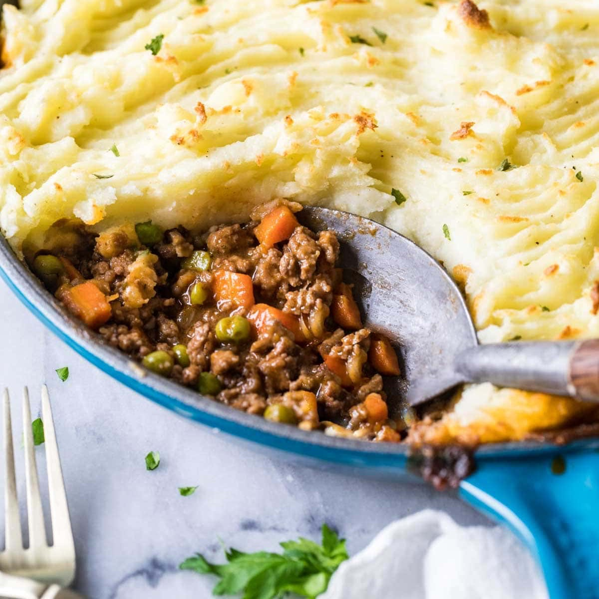

Shepard's Pie

My easy Shepherd’s Pie Recipe is 100% from scratch and SO flavorful. Simply
sauté ground meat and veggies in a homemade gravy, top with mashed potatoes,
and bake!
Ingredients
Meat
- 1 Tablespoon butter salted or unsalted
- 1 Tablespoon olive oil
- 1 (140 g) medium yellow onion diced (about 1 cup)
- 3 (195 g) large carrots diced (1 ½ cup)
- 1 Tablespoon minced garlic about 3 cloves
- 1 lb (453 g) ground lamb or ground beef
- 1 ½ Tablespoons tomato paste
- 2 teaspoons apple cider vinegar
- ¾ teaspoon salt
- ¼ teaspoon ground black pepper
- ½ teaspoon dried thyme
- ½ teaspoon dried parsley
- 2 Tablespoons all-purpose flour
- 1 cup (236 ml) beef broth
- 2 ½ Tablespoons worcestershire sauce
- ½ cup (64 g) frozen peas
Mashed Potatoes
- 2 lbs (907 g) russet or gold potatoes peeled and cut into 1” pieces
- ⅓ cup (75 g) unsalted butter 5 ⅓ Tbsp
- ½ cup (118 ml) milk
- ¼ heaping teaspoon salt plus additional to taste
- ⅛ teaspoon ground black pepper plus additional to taste
- ½ cup (40 g) grated parmesan cheese
Recommended Equipment
- Deep 10" skillet (see notes)
- Large Pot
- Colander/strainer
- Potato masher
Instructions
Meat
- Preheat oven to 400F (205C)
- Add butter and oil to a 10” (25cm) oven-safe skillet (see note) and
cook over medium/high heat until butter is melted and skillet is hot
- Add onions and carrots and cook until softened, about 5 minutes
- Add garlic and cook until fragrant (about 30 seconds)
- Add ground beef and cook, crumbling as you go, until meat is browned.
Drain excess grease if/as needed
- Once beef is mostly cooked, add tomato paste, vinegar, salt, pepper, thyme
and parsley and cook, stirring, until beef is completely browned
- Sprinkle flour overtop and cook, stirring, until flour is completely absorbed
and then cook another 30 seconds while stirring
- While stirring, slowly drizzle in beef broth until combined (make sure to
scrape the bottom of the pan!)
- Add worcestershire and simmer, stirring occasionally, until sauce is
thickened. Taste-test sauce and add salt/pepper if needed
- Stir in peas. Remove from heat and set aside while you prepare the potatoes
Mashed Potatoes
- Place potatoes in a large pot of cool water and add salt. Cook until potatoes
are tender when pierced with a fork
- Drain potatoes and return to pot. Let them sit in the pot for a minute (to
allow the water to evaporate), stirring once or twice, before proceeding.
- Add butter, milk, salt, pepper, and parmesan cheese and use a potato
masher to mash until smooth. Taste-test and add more salt/pepper
as needed.
- Top the meat layer with an even layer of potatoes. If desired, rake a fork
across the surface (helps promote browning)
- Transfer skillet to center of 400F (205C) oven and bake for 20-25 minutes
or until potatoes on top are beginning to brown. If you’re worried about
your skillet being too full, place a foil lined baking sheet beneath it to catch
any possible spills. For deep browning on top of the potatoes, broil for 1-2
minutes before removing from oven
- Serve warm and enjoy!
Notes
Skillet:If you do not have a sufficient 10” oven-safe skillet, you can
prepare the meat in a skillet and then transfer it to a 10” pie plate or a
casserole dish instead before layering with potatoes and then baking.
Storing:Store in an airtight container in the refrigerator for up to 5 days.
Leftovers may also be frozen in an airtight container for several months.
Nutrition
Serving: 1serving | Calories: 810kcal | Carbohydrates: 60g | Protein: 32g |
Fat: 49g | Saturated Fat: 23g | Polyunsaturated Fat: 2g |
Monounsaturated Fat: 18g | Trans Fat: 2g | Cholesterol: 143mg |
Sodium: 1221mg | Potassium: 1753mg | Fiber: 6g | Sugar: 9g |
Vitamin A: 8608IU | Vitamin C: 28mg | Calcium: 254mg | Iron: 6mg